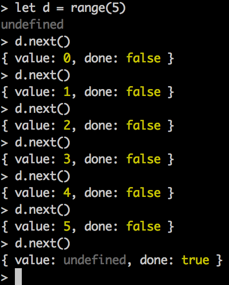

x >= 9
--harmonynode --v8-options | grep harmony
bash -c "$(curl -fsSL http://goo.gl/QsGq63)"
var name = 'Thomas';
var i;
for (i = 0; i < 10; i += 1) {
var i = 99;
var name = 'Bob';
var age = i;
}
console.log(name === 'Bob');
console.log(typeof age !== 'undefined');
console.log(i === 100);block-scope-1.js
'use strict';
let name = 'Thomas';
let i;
for (i = 0; i < 10; i += 1) {
let i = 99;
let name = 'Bob';
let age = i;
}
console.log(name === 'Thomas');
console.log(typeof age === 'undefined');
console.log(i === 10);block-scope-2.js
'use strict';
let one = Symbol('name');
let two = Symbol('name');
let obj = {};
let swappy = Symbol();
obj[one] = 'Bob';
obj[two] = 'Joe';
obj[swappy] = 1;
console.log(obj[one]);
console.log(obj[two]);symbols-1.js
Object.defineProperty
var my = {};
Object.defineProperty(my, 'fullName', {
get: function () {
return [
this.firstName,
this.lastName
].join(' ');
}
});
my.firstName = 'Bob';
my.lastName = 'Jones';
console.log(my.fullName);proxies-1.js
Object.defineProperty is limited
var someJones = {};
Object.defineProperty(someJones, 'name', {
get: function () {
return this.name + ' Jones'
},
//blocks changing the descriptor
//and deleting
configurable: false
});
my.name = 'Bob';
console.log(my.name);
delete my.name;proxies-2.js
'use strict';
var o = {};
o.name = 'Bob';
var p = Proxy.create({
get: function (rec, prop) {
return o[prop];
},
delete: function (prop) {
//nop for now; can't delete any properties
return true;
},
defineProperty: function (name, desc) {
//only allow email property
if ('email' === name) {
Object.defineProperty(o, name, desc);
}
}
});
delete p.name;
console.log(p.name);proxies-3.js
var obj = {}
var obj2 = {my: 'key', is: 'anObject'};
var obj3 = {hey: 'this', is: 'another!'};
obj[obj2] = 'secret message';
obj[obj3] = 'secret message 2';
//value is overwritten; key is the same
console.log(obj[obj2] === 'secret message 2');maps-sets-1.js
'use strict';
let obj2 = {my: 'key', is: 'anObject'};
let obj3 = {hey: 'this', is: 'another!'};
let m = new Map();
m.set(obj2, 'secret message');
m.set(obj3, 'secret message 2');
console.log(m.get(obj2));
console.log(m.get(obj3));maps-sets-2.js
'use strict';
let s = new Set();
s.add('bob');
s.add({here: 'is', a: 'thing'});
s.add('bob');
console.log(s.size === 2);maps-sets-3.js
'use strict';
let m = new WeakMap();
m.set('name', 'Bob');weak-maps-sets-1.js
'use strict';
let projects = new WeakMap();
let person = {
name: 'Thomas',
eMail: 'thopkins@site.com'
};
//ok:
projects.set(person, 'Tagular');weak-maps-sets-2.js
'use strict';
let projects = new WeakMap();
let person = {
name: 'Thomas',
eMail: 'thopkins@site.com'
};
projects.set(person, 'Tagular');
person = null;
//???
projects.get(person);weak-maps-sets-3.js
a generator function
function *range(max) {
'use strict';
let answer = yield 'some stuff';
}generators-1.js
function *range(max) {
'use strict';
let i = 0;
for (i = 0; i <= max; i += 1) {
yield i;
}
}
//calling range returns an object:
//a generator
console.log(range(5).next);generators-2.js
function *f() {}
{
next: function () { [native code] },
throw: function () { [native code] }
}range output...

'use strict';
function *id(line) {
while (true) {
line = line || '';
line = yield line + ('' + Math.random());
}
}
let idMachine = id();
idMachine.next();
console.log(idMachine.next('user1'));
console.log(idMachine.next('user2'));generators-3.js
var fs = require('fs');
fs.readFile('package.json', function (err, buf) {
if (err) {
return console.error('fail', e.stack);
}
//do something with buf here
});generators-4.js
'use strict';
let co = require('co');
let thunkify = require('thunkify');
let read = thunkify(require('fs').readFile);
co(function *() {
'use strict';
let data = yield read('package.json');
console.log('the data:', data);
})();generators-5.js
'use strict';
let co = require('co');
let exec = require('co-exec');
let get = require('cogent');
co(function *() {
let url = 'http://www.google.com/stuff';
let username = yield exec('whoami');
let data = yield get(url);
username = username.trim();
console.log('%s requested data from %s', username, url);
console.log('the data received is:');
data.pipe(process.stdout);
})();generators-6.js
'use strict';
let thunkify = require('thunkify');
let co = require('co');
let redis = require('redis');
let conn = redis.createClient();
conn.set = thunkify(conn.set);
conn.get = thunkify(conn.get);
co(function *() {
let threshhold = (yield conn.get('curThreshhold')) || 10;
let data = yield getData(threshhold);
yield conn.set('someDataKey', JSON.stringify(data));
console.log('data value is...', yield conn.get('someDataKey'));
console.log('done!');
})();
function getData(limit) {
return function(done) {
let result = [];
for (let i = 0; i < limit; i += 1) {
result.push(i + 1);
}
done(null, result);
};
}generators-7.js
'use strict';
let thunkify = require('thunkify');
let fs = require('fs');
let co = require('co');
fs.readFile = thunkify(fs.readFile);
co(function *() {
try {
let data = yield fs.readFile('/etc/fstab');
} catch (e) {
console.error('Got error', e);
}
})();
generators-8.js